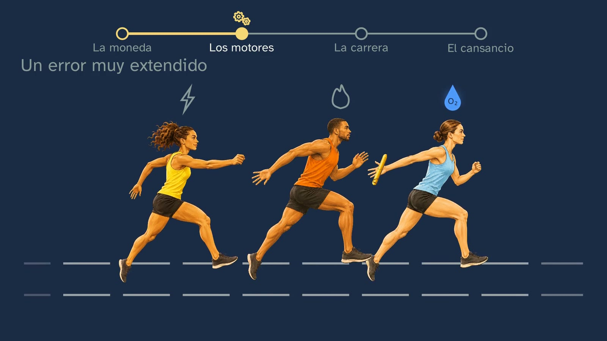
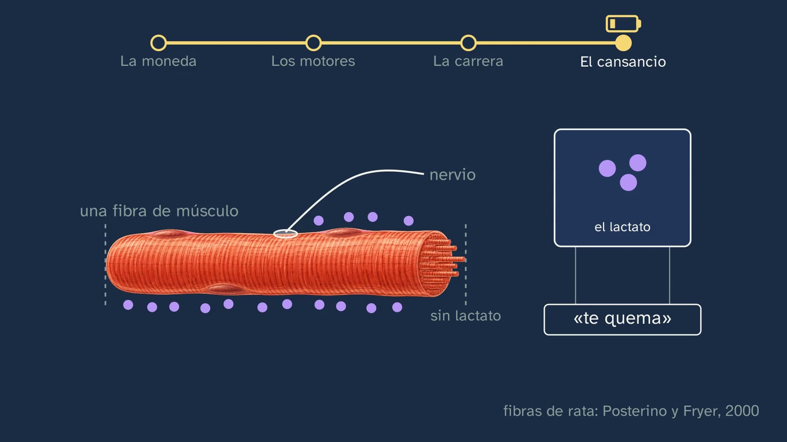
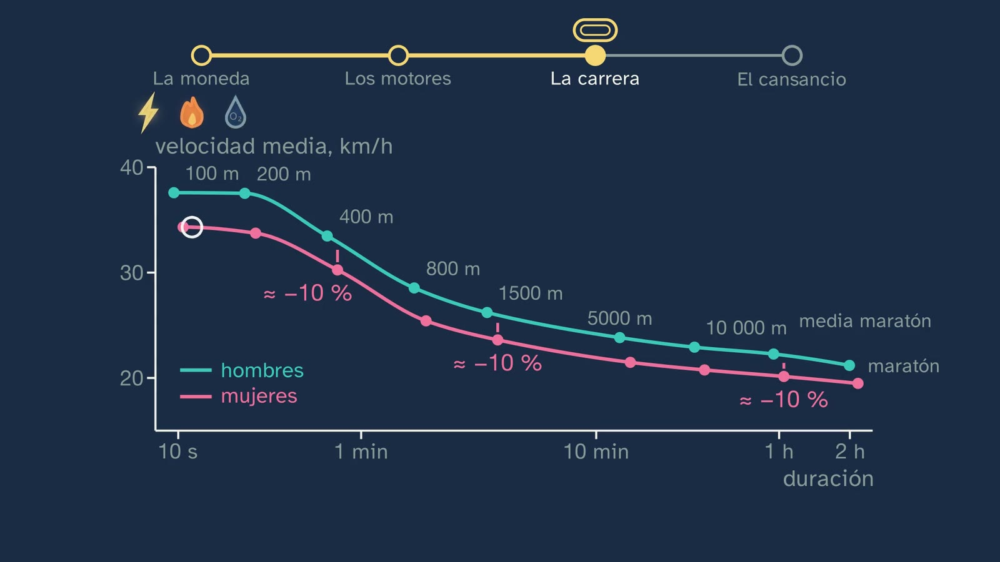

De dónde sale la energía
En pocas palabras
La clase abre el tema 2 con una pregunta que cualquiera se ha hecho mirando una carrera: ¿por qué nadie puede correr un maratón a la velocidad de un cien metros? Para responderla, mira dentro del músculo: la moneda que gasta, los tres motores que la fabrican, cuál manda según lo que dure y lo intenso que sea el esfuerzo, y qué cansa en un esprint y en un maratón. Y deja dos ideas que no trae ninguno de los libros y apuntes leídos al diseñar el tema: los tres motores trabajan a la vez, con números, y el lactato no es el culpable del cansancio.
El gancho (2:02). Londres, 26 de abril de 2026: el keniano Sabastian Sawe corre el maratón en 1:59:30, el primer maratón de menos de dos horas que cuenta como récord del mundo (World Athletics, homologado el 23/07/2026). Cada cien metros, en 17 segundos, 422 veces seguidas. Usain Bolt corrió cien en 9,58 (Berlín, 2009): casi al doble de velocidad (1,77 veces; cálculo del canal).
La moneda del músculo (2:56). El músculo sólo gasta ATP; lo que comes sirve para fabricarlo. Llevas entre 50 y 80 g repartidos por todos tus músculos, según tu cuerpo (unos 5 mmol por kilo de músculo, Hargreaves y Spriet, 2020, en 21 a 33 kg de músculo, las medias de mujeres y de hombres de Janssen y otros, 2000; cálculo del canal: de 53 a 84 g), que darían para un segundo y medio a tope (1,35 y 1,43 s con dos estimaciones: Hargreaves y Spriet, 2020; Parolin y otros, 1999). Nunca se gasta entero: en el conjunto del músculo no baja mucho más de un tercio, porque el músculo frena antes (Allen, Lamb y Westerblad, 2008). Lo que nadie cuenta: cada día fabricas y gastas algo así como tu propio peso en ATP (Törnroth-Horsefield y Neutze, 2008). No es un depósito: es una moneda que circula.
Tres motores (4:12), los tres sistemas energéticos de los apuntes. La fosfocreatina, inmediata: rehace el ATP en un solo paso y, a tope, se gasta casi entera en 10–15 s (Hargreaves y Spriet, 2020). Cómo se sabe: desde 1980 se ve bajar y subir dentro del músculo de una persona viva, sin pinchar, con resonancia magnética de fósforo (Chance y otros, 1980). Con los datos abiertos de una persona que da patadas suaves dentro del imán (Dryad, CC0), baja una cuarta parte en 42 s, el fosfato sube en espejo y, al parar, vuelve casi entera en un par de minutos. Se recarga con oxígeno: tras un esfuerzo corto, la mitad en medio minuto (Harris y otros, 1976). La glucólisis, rápida: rompe la glucosa del glucógeno sin esperar al oxígeno, con unas tres veces la capacidad de la fosfocreatina (Hargreaves y Spriet, 2020); saca poco de cada glucosa y fabrica lactato. La vía con oxígeno, la aeróbica: en las mitocondrias quema hidratos y grasas; es la que menos ATP da por segundo, pero está encendida desde el principio y casi no se acaba. Las grasas de un adulto guardan de 50 000 a 100 000 kcal, y todo su glucógeno, de 1200 a 3400: de 15 a 83 veces menos (Hargreaves y Spriet, 2020, fig. 2; cálculo del canal). Y la grasa se quema desde el principio, no «a partir de los 20 o 30 minutos» (6:24).
A la vez, no por turnos (6:45). La carrera de relevos de muchos apuntes, desmontada con la revisión de Gastin y Suppiah (2026; 102 estudios, 311 medidas, CC BY 4.0): los tres motores arrancan a la vez desde el primer segundo, y lo que cambia es cuánto pone cada uno. En un esfuerzo a tope de 10 s, el oxígeno pone casi un 10 % de toda la energía (9 %); en uno de 30 s, un 25 %; y en uno de un minuto y veinte, la mitad (78,6 s en la revisión). Cuanto más suave, antes manda el oxígeno; andando, casi todo lo pone él. Predicción: en un 800 m a tope de dos minutos y medio, unos dos tercios con oxígeno (67 %, de la tabla 5 de la revisión; cálculo del canal). Y lo que casi nadie dice: el 78 % de los grupos medidos son de hombres, y con mujeres sólo hay una pista.
Los récords, un experimento (8:28). La velocidad media de los récords del mundo frente a lo que dura cada prueba, del 100 m al maratón (World Athletics, consultados el 22/11/2026). Bolt, casi a 38 km/h en el cien, y el doscientos casi lo iguala. Del cien al ochocientos, que dura 10,5 veces más, se pierde casi una cuarta parte de la velocidad (un 24 %); del cinco mil al maratón, que dura 9,5 veces más, sólo otro 11 %. Sawe, a 21,2 km/h durante dos horas. Primero se para a pensar por qué (9:12) y luego llega la respuesta a la pregunta del título (9:26): a la izquierda pesan los motores rápidos, que dan mucho y aguantan poco; a la derecha manda el oxígeno, que casi no se acaba. La curva de las mujeres tiene la misma forma, del 89 al 92 % de la velocidad de los hombres en cada prueba (cálculo del canal; Sandbakk y otros, 2018, dan «approximately 8-12%» de diferencia). Y no es nuevo: en 1925, Archibald Hill ya vio esa forma con los récords de su época (Burnley y otros, 2025).
Qué te cansa (10:36). Una rueda de sospechosos. En un esprint, el fosfato que deja la fosfocreatina al gastarse y los fallos del calcio, la señal que hace contraerse a la fibra (Westerblad, Allen y Lännergren, 2002; Allen y otros, 2008). En un maratón, el glucógeno de músculos e hígado que casi se acaba: el muro. Que van juntos es seguro; por qué exactamente, todavía se discute (Allen y otros, 2008; Ørtenblad y otros, 2013). Con más de cuatro millones de registros de maratón (Smyth, 2021): entre quienes habían corrido más de uno, chocan con el muro el 28 % de los hombres y el 17 % de las mujeres, de media hacia el km 30; en parte, según el autor, por cómo reparten el ritmo.
El lactato, sin culpa (12:10). De las patas de rana de Fletcher y Hopkins (Cambridge, 1907) salió la idea del ácido láctico que cansa. Con trazadores, George Brooks (Berkeley; primero en ratas y, desde los años ochenta, en personas) vio que al hacer ejercicio la mayor parte del lactato se quema como combustible (Mazzeo y otros, 1986, en personas: un 87 %); y en otro estudio, el corazón quemaba casi todo el que captaba (Gertz y otros, 1988). Se forma siempre, también con oxígeno de sobra; el hígado fabrica glucosa con él; y tras un esfuerzo a tope vuelve al reposo en una o dos horas. En fibras de rata, mucho lactato por sí solo apenas quita fuerza (Posterino y otros, 2001). En el músculo, más del 99 % está como lactato, no como ácido láctico; de dónde sale la quemazón, en debate; las agujetas, en la clase 3.
Objetivo. Al terminar, el alumnado sabrá de dónde saca su cuerpo la energía para moverse (el ATP, y los tres sistemas que lo fabrican trabajando a la vez), cuál manda según lo que dure y lo intenso que sea el esfuerzo, y por qué un esprint y un maratón cansan de forma distinta.
Currículo
Real Decreto 243/2022, Educación Física, materia común de 1.º de Bachillerato. Citas comprobadas en la copia del laboratorio del texto consolidado del BOE (comprobado el 22/11/2026).
| Elemento | Qué dice el decreto | Dónde se trabaja |
|---|---|---|
| Saber básico (bloque C, resolución de problemas en situaciones motrices) | «Planificación para el desarrollo de las capacidades físicas básicas: fuerza y resistencia. Sistemas de entrenamiento.» | La base de los sistemas de entrenamiento: qué motor manda según la duración y la intensidad (4:12–10:28) |
| Introducción de la materia | «En la etapa de Bachillerato se continuará incidiendo en el dominio del ámbito corporal, profundizando en los componentes técnico-tácticos de sus manifestaciones, así como en los factores que condicionan su adecuada puesta en práctica.» | Los factores: de dónde sale la energía y qué cansa (toda la clase) |
| Competencia específica 1 | «Interiorizar el desarrollo de un estilo de vida activo y saludable, planificando responsable y conscientemente su actividad física a partir de la autoevaluación personal en base a parámetros científicos y evaluables…» | Cuanto más suave, más pone el oxígeno (7:30); un descanso corto devuelve la chispa (5:03); qué cansa en un esprint y en un maratón (10:36–11:53) |
| Descriptor STEM2 (de la CE1) | «… apreciando la importancia de la precisión y la veracidad y mostrando una actitud crítica acerca del alcance y limitaciones de los métodos empleados.» | Las ranas de 1907 frente a los trazadores (12:19–13:18); una persona ilustra y no prueba (4:39); con mujeres, una pista y no una prueba (8:07) |
| Criterio 1.1 | «Planificar, elaborar y poner en práctica de manera autónoma un programa personal de actividad física dirigido a la mejora o al mantenimiento de la salud, aplicando los diferentes sistemas de desarrollo de las capacidades físicas implicadas […], evaluando los resultados obtenidos.» | El porqué fisiológico de cada sistema: el reparto según la duración (7:14) y el ejercicio 1 |
El decreto no nombra la energía. En la parte de Educación Física no aparecen «energía», «oxígeno» ni «aeróbico». Esta clase es la base de los «sistemas de entrenamiento» del saber C: los «factores que condicionan su adecuada puesta en práctica» de la introducción. Los sistemas en sí llegan en las clases 4 («Resistencia: cómo se entrena») y 5 («La fuerza a tu edad: cómo se entrena»).
Lo que hay que traer. De Física y Química de la ESO, que la energía se transforma y se conserva (Real Decreto 217/2022). De la clase 4 del tema 1, «Las apps que te miden», sus tres ejercicios, que se resuelven al empezar. Lo que no se trae, y se dice: la ESO no nombra el ATP, la mitocondria ni la respiración celular, ni en el decreto estatal ni en las cinco ESO autonómicas leídas al diseñar el tema; la clase parte de cero. A quien curse Anatomía Aplicada (optativa en Andalucía, Castilla y León y Galicia), la clase le sirve de repaso desde el movimiento.
Cómo está construida la clase
Capítulos del vídeo

| Parte | Qué pasa | Por qué así |
|---|---|---|
| Lo que ya sabes y las soluciones | El mapa del tema (0:05); ¿se puede crear energía de la nada? (0:21, silencio corto): no, se transforma, la de las piernas sale de lo que comes y una parte se va en calor (0:31); las tres soluciones de «Las apps que te miden», cada una con su enunciado (0:48–2:02) | Recuperar (Roediger y Karpicke, 2006) una idea de otra materia que abre la de hoy |
| Menos de dos horas | Sawe en Londres, 2026, y Bolt en Berlín, 2009, en dos rectas (2:02–2:18); la pregunta, a cámara (2:36); la misión y el recorrido: la moneda, los motores, la carrera y el cansancio (2:40) | El cuándo, el dónde y el quién antes de la intriga; la pregunta antes de la explicación |
| La moneda del músculo | El ATP que suelta un fosfato (2:56); ¿para cuánto esprint te da? (3:18, predicción); un segundo y medio, y nunca entero (3:33); tu peso cada día, una moneda que circula (3:53, silencio para pensar) | Predecir antes de ver (White y Gunstone, 1992); lo que nadie cuenta, con un dato que sorprende |
| Tres motores | Los tres sistemas energéticos, con un icono y un color que no cambian en toda la clase (4:12); la fosfocreatina (4:22); cómo se sabe, con la resonancia de una persona (4:39) y el fosfato en espejo (5:03); la glucólisis (5:26); la aeróbica, con las palabras de los apuntes (5:52); la grasa, desde el principio (6:24) | ¿Cómo lo sabemos?, con datos reales que ilustran; el vocabulario de sus apuntes, unido a los motores |
| A la vez, no por turnos | El relevo (6:45), tachado (7:00); el reparto, en tres barras (7:14); en qué acierta el relevo, y cuanto más suave (7:30); el 800 m (7:51, predicción); dos tercios, y quién se ha medido (8:07) | El error, a la vista (Muller y otros, 2008), con la revisión más reciente |
| Los récords, un experimento | Los récords, uno a uno (8:28); el 100 y el 200 (8:40); del 5000 al maratón (8:58); para y piensa (9:12, 5 s); la respuesta, con la franja de los motores (9:26); las mujeres (9:52); Hill, 1925 (10:01) | La respuesta al título, con datos públicos que cualquiera puede comprobar; pensar antes de oír la respuesta |
| A mitad | Isidora: tres motores a la vez; cuanto más dura, más manda el oxígeno (10:28) | |
| Qué te cansa | La rueda de sospechosos (10:36); el esprint (10:44); el maratón y el muro (11:05); ¿ellos o ellas? (11:24, predicción); el estudio de Smyth (11:37–11:53) | Los sospechosos antes de la causa; lo que está en debate, dicho |
| El lactato, sin culpa | Los tres carteles: te cansa, te quema, es un desecho (12:10); Fletcher y Hopkins (12:19); ¿lo tira, lo guarda o lo quema? (12:40, predicción); Brooks y los trazadores (12:54); cada cartel cae con su prueba (13:18); lactato y no ácido, y la quemazón en debate (13:43) | El error más arraigado, desmontado cartel a cartel con la historia de cómo se supo (descriptor STEM2) |
| Ponlo a prueba y para practicar | La escalera o la marcha en el sitio (14:13) y el puño (14:51), con sus salidas; el resumen (15:33); tres ejercicios (16:30); la pregunta abierta (17:11); la próxima clase (17:35) y la despedida (17:49) | Lo práctico se propone, con su salida; el resumen lo cita todo |
Puentes con otras materias. Física y Química: la energía que se transforma (y la parte que se va en calor), la velocidad media en km/h. Biología: la célula y la mitocondria; en 2.º, la respiración celular con sus rutas. Química: ácidos y bases (a pH 7, hay unas 1380 moléculas de lactato por cada una de ácido láctico; cálculo del canal con su pKa, 3,86). Matemáticas: velocidades, razones y porcentajes; leer e interpolar una tabla; un eje que estira los segundos. Historia de la ciencia: Hill y su Nobel de 1922, por el calor del músculo; las ranas de 1907.
Plan de una sesión de 50 minutos
Pensado para el aula con proyector o como clase invertida.
| Minutos | Qué se hace |
|---|---|
| 0–3 | Sin vídeo. «Antes de empezar», en la hoja: ¿por qué nadie corre un maratón a la velocidad de un cien? Para sí. |
| 3–12 | Vídeo hasta el final de los tres motores (0:00–6:45). Parar en la predicción del ATP (3:18) y discutirla en parejas. |
| 12–20 | Vídeo hasta la mitad (6:45–10:28). Parar en el para y piensa de la curva (9:12): ¿por qué cae deprisa y luego se aplana? |
| 20–30 | Vídeo hasta el final (10:28–17:52). Parar en la predicción del lactato (12:40). |
| 30–50 | La actividad de abajo, o la tabla «¿Cuánto pone el oxígeno?» de la hoja, los ejercicios por parejas y la pregunta abierta en debate. |
Errores típicos y cómo se tratan
Ninguno está medido con alumnado español de Bachillerato: son los que circulan en libros, apuntes, gimnasios y prensa (ficha del tema).
- «Primero trabaja la fosfocreatina; cuando se acaba, la glucólisis; y luego el oxígeno.» La carrera de relevos (6:45). Los tres arrancan a la vez, desde el primer segundo, y cambia cuánto pone cada uno (Gastin, 2001; Gastin y Suppiah, 2026). El relevo acierta, más o menos, en cuál manda según lo que dure el esfuerzo, aunque el oxígeno pasa a mandar antes de lo que suele decirse; lo que falla es que vayan uno detrás de otro (7:30).

- «El motor con oxígeno tarda en arrancar.» Está encendido desde el principio; es el que menos ATP da por segundo, no el que llega tarde (5:52). En un esfuerzo a tope de diez segundos ya pone casi un 10 % de toda la energía (7:14).
- «Los porcentajes dicen lo que pasa en ese segundo.» El 9, el 25 y el 50 % son el reparto de todo un esfuerzo a tope que dura eso, no el de ese instante: cada barra es un esfuerzo distinto (7:14). Es el error que más fácilmente se cuela al explicarlo en clase con un reloj que corre.

- «La grasa sólo se quema a partir de los 20 o 30 minutos.» Se quema desde el principio, junto con los hidratos; lo que cambia es de dónde llega: la de dentro del músculo se usa más al principio y, con el tiempo, cada vez más la que trae la sangre (6:24; Hargreaves y Spriet, 2020; Romijn y otros, 1993).
- «Cuando haces un esprint, te quedas sin ATP.» En el conjunto del músculo no baja mucho más de un tercio: el músculo se cansa y frena antes de quedarse sin él (3:33).
- «El ácido láctico te cansa, te quema y se queda como desecho.» Cada cartel cae con su prueba: la mayor parte del lactato se quema como combustible, el corazón quema casi todo el que capta, el hígado fabrica glucosa con él, vuelve al reposo en una o dos horas, y en fibras de laboratorio mucho lactato por sí solo apenas quita fuerza (12:54–13:18). La quemazón no cae: de dónde sale, se discute (13:43).

- «El ácido láctico te da agujetas.» Tampoco: la clase lo dice (13:43) y lo deja para la clase 3, «¿Por qué mejoras al entrenar?».
- «Lo que comes mueve el músculo.» Los hidratos y las grasas no mueven la fibra directamente: sirven para fabricar ATP, que es lo único que la fibra gasta (2:56).
Preguntas y soluciones
Predicciones y para y piensa (dentro del vídeo)
- La energía, ¿se puede crear de la nada? (0:21) No: no se crea ni se destruye, sólo se transforma. La que mueve las piernas sale de lo que comes, y una parte se va en calor: por eso te acaloras al correr (la mayor parte de la energía del metabolismo sale como calor: Hargreaves y Spriet, 2020).
- El ATP que tienen ahora tus músculos, ¿para cuánto esprint te da: un segundo, diez o un minuto? (3:18) Para un segundo y medio, más o menos: la ficha buena es «1 segundo» (1,35 y 1,43 s, con dos estimaciones).
- ¿Con tan poco encima, tu peso cada día? (3:53, silencio para pensar) Sí: el ATP no se guarda, se gasta y se rehace sin parar.
- Un 800 m a tope en unos dos minutos y medio, ¿cuánta energía sale del oxígeno: poca, la mitad o la mayoría? (7:51) La mayoría: unos dos tercios (67 %, interpolando la tabla 5 de Gastin y Suppiah entre los 2 min, 62 %, y los 3 min, 72 %; cálculo del canal).
- Para y piensa: ¿por qué la curva de los récords cae tan deprisa al principio, y luego casi no baja? (9:12) A la izquierda, en segundos, pesan mucho los motores rápidos, que dan mucho pero aguantan poco; a la derecha manda el oxígeno, que da menos por segundo pero casi no se acaba. La raya de «mitad y mitad», en torno a 1 min 20 s, cae entre el 400 y el 800. Por eso nadie corre un maratón a la velocidad de un cien.

- En los maratones populares, ¿quién choca más con el muro: los hombres o las mujeres? (11:24) Ellos: el 28 % de los hombres y el 17 % de las mujeres, entre quienes habían corrido más de un maratón (Smyth, 2021).
- Durante el ejercicio, ¿qué hace tu cuerpo con la mayor parte del lactato: lo tira, lo guarda o lo quema? (12:40) Lo quema, como combustible.
La hoja del alumno: ¿cuánto pone el oxígeno? Un esfuerzo a tope de 10 s: casi un 10 % con oxígeno y un 90 % sin él; mandan los motores sin oxígeno. De 30 s: un 25 % y un 75 %; también sin oxígeno. De un minuto y veinte: la mitad y la mitad. Un 800 m de dos minutos y medio: unos dos tercios con oxígeno y un tercio sin él; manda el oxígeno. Andando: casi todo con oxígeno. En ninguno trabaja un solo motor: los tres están encendidos desde el primer segundo. Si se va más suave, el oxígeno manda antes (7:30). Y el porqué del esprint y el maratón: el esprint se corre con mucho de los motores rápidos, que dan mucha energía por segundo pero aguantan poco; el maratón, casi sólo con el oxígeno, que da menos por segundo pero casi no se acaba (9:26).
Para practicar (las soluciones abren la clase siguiente de Educación Física)
- Una chica de tu edad corre los 100 m en 15 s, los 400 m en 1 min 15 s y los 1500 m en 6 min. Con la tabla (15 s: 14 % con oxígeno; 1 min 15 s: 49 %; 6 min: 83 %), di en qué prueba sale la mayor parte de la energía sin oxígeno, en cuál con oxígeno y en cuál casi a medias; y por qué ninguno de los tres motores trabaja solo. En el 100 m, la mayor parte sin oxígeno: 100 − 14 = 86 %. En el 1500 m, la mayor parte con oxígeno: el 83 % (sin oxígeno, 17 %). En el 400 m, casi a medias: 49 % con oxígeno y 51 % sin él. Ninguno trabaja solo: aun en el esfuerzo de 15 s, el oxígeno pone un 14 %, y aun en el de 6 min, un 17 % sale sin oxígeno, porque los tres motores arrancan a la vez. Las dos primeras cifras son filas de la tabla 5 de Gastin y Suppiah (2026); la de 6 min (82,6 %) se interpola entre sus filas de 5 y 10 min (cálculo ejecutado en
calculos.json). Los tiempos de la chica siguen la curva de la clase: en el 1500 va al 78 % de su velocidad del 400, como en los récords. Criterios: leer la tabla y sacar la parte sin oxígeno; decir «a la vez» con una cifra que lo pruebe (base del criterio 1.1). Matiz para quien vaya más allá: la tabla sale de adultos, casi todos hombres; para una chica de 16 años es una aproximación. La chica es un ejemplo inventado. - Explica por qué el lactato no puede ser un desecho, si el corazón lo quema. Un desecho no sirve y hay que echarlo; el lactato se usa: el corazón quemaba casi todo el que captaba (Gertz y otros, 1988), al hacer ejercicio la mayor parte del lactato se quema como combustible (Brooks, con trazadores), y el hígado fabrica glucosa con él. Es combustible y materia prima. Criterios: la idea de combustible y al menos una prueba.
- Di qué te cansa al final de un 400 m a tope, y qué al final de un maratón. Al final de un 400, la fosfocreatina está casi gastada y ha dejado mucho fosfato suelto en la fibra; ese fosfato y los fallos del calcio son los principales sospechosos: la fibra recibe la orden, pero responde peor. Al final de un maratón, el glucógeno de músculos e hígado, casi vacío: el muro; que van juntos es seguro, por qué exactamente se discute. Criterios: distinguir los dos casos; no culpar al lactato; hablar de sospechosos y de debate donde lo hay, no de culpables probados.

Para seguir pensando. Si el lactato no es el culpable, ¿por qué crees que esa idea ha aguantado desde 1907, y todavía sale en libros y en apuntes? ¿Y qué otra idea del deporte crees que podría estar en el mismo caso? No tiene respuesta de libro, y la clase no da veredicto (artículo 9 de la Constitución del canal). Pistas para el debate:
- Porque tenía pruebas, de las de su época. El ácido láctico sí se multiplicaba cuando el músculo se cansaba (Fletcher y Hopkins, 1907); lo que el experimento no probaba es que fuese la causa. Y tenía detrás la mejor ciencia del momento: la otra mitad del Nobel de 1922 que recibió Hill fue para Otto Meyerhof, «por su descubrimiento de la relación fija entre el consumo de oxígeno y el metabolismo del ácido láctico en el músculo» (Fundación Nobel). Gladden (2004) dice que el artículo de 1907 abrió «la era del ácido láctico».
- Porque cambiar lo que se sabe tarda. El propio Brooks cuenta que, cuando empezaba, él también tenía el lactato por un desecho que causaba la fatiga y el dolor (Brooks, 2020); la prueba en personas llegó con los trazadores, en los años ochenta, y desde entonces ha tenido que abrirse paso en libros y apuntes.
- Porque es una buena historia, y aquí cabe la opinión de cada cual: un solo culpable, con nombre de ácido, que parece explicar a la vez el cansancio, la quemazón y las agujetas.
- Para no exagerar. No todo lo que rodeaba a la vieja idea está cerrado: de dónde sale la acidez del esfuerzo, y cuánto pesa en el cansancio, se sigue discutiendo (Robergs y otros, 2004, frente a Böning y Maassen, 2008). Y medir el lactato en sangre sigue siendo útil para saber a qué intensidad se va (la clase 2 del tema lo usa para el umbral).
- Sobre la segunda pregunta: una herramienta para que cada cual juzgue la idea que proponga es la de la propia clase: ¿qué prueba hay?, ¿quién lo midió, y con cuántas personas?, ¿van juntos o uno causa el otro? La clase ya desmonta otra (la grasa «a partir de los 20 o 30 minutos»), y el tema pondrá a prueba más: «sin dolor no hay ganancia» (clase 3) o «hay que estirar antes para no lesionarse» (clase 7).
Una actividad para el aula
El laboratorio de los tres motores (30–40 min, por parejas; nada es máximo, y nadie enseña sus datos: cada cual apunta los suyos en su hoja y en voz alta sólo se dice si bajó o no):
- La curva, a mano (15 min). Con la tabla de abajo, cada pareja dibuja la velocidad media frente a la duración (en papel o en una hoja de cálculo, con el tiempo en escala logarítmica o estirando los segundos, como en el vídeo) y marca la raya de «mitad y mitad», en torno a 1 min 20 s. Calculad cuánto se pierde del 100 al 800 y del 5000 al maratón (un 24 % y un 11 % en los hombres), y qué tanto por ciento de la velocidad de los hombres va la de las mujeres en cada prueba (del 89 al 92 %). Para quien vaya más allá: la curva de 1925, como Hill, con la progresión de los récords (en «Recursos abiertos»).
- El puño, por tramos (10 min). Sentados, con el brazo colgando: abrir y cerrar el puño, del todo y lo más rápido posible, durante 30 s, sin aguantar la respiración; la pareja cuenta cada tramo de 10 s con el cronómetro. Tres minutos de descanso y otra vez. ¿Baja la cuenta de un tramo a otro? ¿Vuelve tras el descanso? Si no baja, también es un resultado: ¿por qué puede ser? (contar mal, no ir a tope, cambiar el ritmo). No hay estudios que digan que salga a todos, y por eso el vídeo la propone «para los más manitas».
- Lo que tarda en bajar (10 min). Un minuto de marcha en el sitio a paso vivo, levantando bien las rodillas. Al parar, sentados, el pulso como en la clase 2 del tema 1: quince segundos justo al acabar, por cuatro, y otra vez al minuto. ¿Sigue alto aunque ya no os mováis? ¿Y la respiración? Es el oxígeno de más con que el cuerpo recarga la fosfocreatina y repone lo gastado.
La tabla de la parte 1. Récords del mundo de World Athletics, consultados el 22/11/2026; las velocidades, cálculo del canal (calculos.json).
| Prueba | Hombres | km/h | Mujeres | km/h |
|---|---|---|---|---|
| 100 m | 9,58 s | 37,6 | 10,49 s | 34,3 |
| 200 m | 19,19 s | 37,5 | 21,34 s | 33,7 |
| 400 m | 43,03 s | 33,5 | 47,60 s | 30,3 |
| 800 m | 1:40,91 | 28,5 | 1:53,28 | 25,4 |
| 1500 m | 3:26,00 | 26,2 | 3:48,68 | 23,6 |
| 5000 m | 12:35,36 | 23,8 | 13:58,06 | 21,5 |
| 10 000 m | 26:11,00 | 22,9 | 28:54,14 | 20,8 |
| Media maratón | 56:51 | 22,3 | 1:02:52 | 20,1 |
| Maratón | 1:59:30 | 21,2 | 2:09:56 | 19,5 |
Con una lesión de piernas, asma sin controlar o un problema de corazón, la marcha no se hace; con una lesión de mano, muñeca o brazo, o un problema de corazón o de tensión, el puño tampoco. Quien se maree o note que algo no va bien, para y se sienta; si duele o hormiguea mucho, se para. Quien no haga una parte, cuenta o cronometra a su pareja, y la curva la hace todo el mundo.
Recursos abiertos: datos y lecturas
- Los récords del mundo, World Athletics (consulta libre), para rehacer la curva o añadir otras pruebas: https://worldathletics.org/records/by-category/world-records.
- La progresión de los récords desde 1912: IAAF, Progression of IAAF World Records, edición de 2015 (PDF libre). Con ella se dibuja la curva de 1925: https://iaaf-ebooks.s3.amazonaws.com/2015/Progression-of-IAAF-World-Records-2015/projet/IAAF-WRPB-2015.pdf.
- La revisión del reparto, Gastin y Suppiah (2026, CC BY 4.0), con la tabla 5 que usa la clase: https://doi.org/10.1007/s40279-026-02414-7.
- Hill y los récords, Burnley y otros (2025, CC BY 4.0), con las curvas de 1925 y de hoy: https://pmc.ncbi.nlm.nih.gov/articles/PMC11908475/.
- La fosfocreatina de una persona en el imán (Dryad, CC0): la altura de los picos de fosfocreatina y de fosfato, instante a instante, en tres repeticiones. Para Matemáticas, ajustar la recuperación a una exponencial: https://doi.org/10.5061/dryad.08kprr59v. El artículo que la describe, Rehman y otros (2024), Data in Brief: https://doi.org/10.1016/j.dib.2024.111114.
- El muro en cuatro millones de maratones, Smyth (2021), PLoS One (CC BY 4.0). Sus datos salen de las webs públicas de los maratones, que lista su tabla S1: https://doi.org/10.1371/journal.pone.0251513.
- La historia del lactato contada por quien la cambió, Brooks (2020), Journal of Sport and Health Science (CC BY-NC-ND): https://pmc.ncbi.nlm.nih.gov/articles/PMC7498672/.
- El artículo de las ranas, Fletcher y Hopkins (1907), Journal of Physiology, de lectura libre: https://pmc.ncbi.nlm.nih.gov/articles/PMC1465827/.
- El glucógeno, explicado para entrenadores, Murray y Rosenbloom (2018), Nutrition Reviews, de lectura libre: https://pmc.ncbi.nlm.nih.gov/articles/PMC6019055/.
- La carrera de una persona a cuatro velocidades, de 3,5 a 9,5 m/s, medida en una pista de laboratorio (Dorn, Schache y Pandy, 2012; SimTK, licencia MIT), de donde salen el corredor de récords y el velocista de la clase: https://simtk.org/home/runningspeeds. El artículo, en Journal of Experimental Biology: https://doi.org/10.1242/jeb.064527.
Notas para el profesorado
- Lo que es de una persona, ilustra; no prueba. La resonancia (4:39) es de un voluntario sin entrenar que da patadas suaves, a 1 Hz durante 42 s, a un 5–10 % de su fuerza máxima (Rehman y otros, 2024). De sus tres repeticiones, la clase enseña la tercera, que baja un 26,5 %. Las tres bajan del 25,8 al 32,7 %, recuperan la mitad de lo perdido en 25–30 s y, a los dos minutos, del 94 al 97 % (ajuste del canal a la hoja de Dryad). Por eso baja sólo una cuarta parte: no va a tope; a tope se gasta casi entera en 10–15 s (4:22). Las cifras generales de la recarga salen de estudios con más personas: la mitad en 21–22 s (Harris y otros, 1976), de 18 a 28 s en el consenso de Meyerspeer y otros (2020), y entera en 60–120 s (Hargreaves y Spriet, 2020). Para quien descargue los datos: la constante del README no casa con la hoja; mejor ajustarla.
- El espectro y el corredor. El espectro se redibuja con esos datos: la altura de los picos de fosfocreatina y de fosfato sale de la hoja, y el del ATP es esquemático; lo dice el pie. El corredor de récords y el velocista se mueven con la carrera medida de una misma persona en una pista de laboratorio (Dorn, Schache y Pandy, 2012): a 5,2 m/s (18,7 km/h; el ritmo del récord es de 21,2 km/h) y en esprint, a 9,4 m/s (34 km/h; el de Bolt, de media, 37,6 km/h). Corren en el sitio a su propia zancada: no son Sawe ni Bolt, ni se parecen a nadie. La velocidad de cada récord la lleva la marca que recorre su recta.
- Lo que es esquema se dice esquema. Los tres iconos de los motores, la fibra que se acorta, la mitocondria, el depósito de ATP, la rueda de sospechosos y la franja de color bajo la curva de los récords (9:26), que sigue la tabla del reparto por duración, no lo que pasó en cada récord. El montaje de 1907 es un dibujo, y lleva «(dibujo)»: no es una imagen de la época.
- Las cifras que se prestan a confusión.
- El reparto (7:14): todo un esfuerzo a tope de esa duración (el error 3). Segundo a segundo, el oxígeno pasa a dar la mayor parte mucho antes: entre los 15 y los 30 s en atletas muy entrenados de 400 a 1500 m, con pocos atletas (Spencer y Gastin, 2001). La revisión de 2026 es de adultos: el 78 % de los grupos, de hombres; el 12 %, de mujeres; y el 11 %, mixtos (suman 101 por el redondeo de la propia revisión). La «mitad y mitad» es de 78,6 s en su resumen; con su tabla 5, sale a 78 s.
- El ATP: los 50–80 g son sólo los de los músculos, entre la media de una mujer adulta (21 kg de músculo) y la de un hombre (33 kg), a unos 5 mmol por kilo (Janssen y otros, 2000; Hargreaves y Spriet, 2020). «Tu peso cada día» es el ATP de todo el cuerpo, y es un orden de magnitud. No se divide una cifra entre la otra para sacar cuántas veces se recicla cada molécula: mezclaría el cuerpo entero con el músculo.
- «Nunca baja mucho más de un tercio» es en el conjunto del músculo: al final de un 400 m, un 27 % (Hirvonen y otros, 1992, seis corredores); en un esfuerzo máximo, de unos 8 a unos 5 mmol/kg (Baker y otros, 2010). En fibras rápidas sueltas puede bajar más (un 68–71 % en Karatzaferi y otros, 2001, con dos personas: es sólo un ejemplo).
- Los récords cambian: son los del 22/11/2026. Las velocidades, del canal: 37,58 km/h el 100 m y 37,52 el 200 m; del 100 al 800, 10,53 veces el tiempo y un 76,0 % de la velocidad; del 5000 al maratón, 9,49 veces y un 88,9 %.
- La curva de 1925 (10:01) se dibuja con los récords masculinos de carrera vigentes el 31/12/1925, cada uno con dos fuentes. Tres matices: el 200 m es el de 220 yardas en recta (20,8 s, Paddock, 1921), el que cuentan hoy las listas; el 400 m es el 47,6 de Liddell (1924), récord entonces y borrado después, aunque el 47,4 de Meredith en 440 yardas (1916) era más rápido; y el maratón no se dibuja: no era prueba de récord (los de maratón son oficiales desde 2004), y la mejor marca de 1925 (Michelsen, 2:29:01,8) se corrió en un recorrido que la ARRS clasifica entre los de 40 km a 25 millas, así que su punto saldría alto. La curva de 1925 acaba en el 10 000 m.
- Hill ya miró a las mujeres. Además de carrera, natación, ciclismo y remo, puso récords femeninos de carrera, hasta unos 200 s (1000 yardas), y de natación, y vio que se parecían en la forma a los de los hombres (Burnley y otros, 2025). Su frase, «attaining practically a constant value after about 12 min» (Hill, 1925, p. 421), se lee en esa revisión: el original de 1925 no se ha podido abrir. Su Nobel es el de 1922, entregado en 1923: la clase dice «de 1922».
- El muro de Smyth (11:37) es una definición: ir al menos un 25 % más lento que el propio ritmo medio del km 5 al 20, durante 5 km o más, pasado el km 20. Son corredores populares, no de élite. El 28 y el 17 % son de quienes corrieron más de un maratón (1,93 millones de registros); con todos los registros, choca el 34 %. El frenazo empieza, de media, en el km 29,6 en ellos y el 29,3 en ellas. El autor lo atribuye en parte al ritmo y al riesgo, y dice que el muro tiene muchas causas: entrenamiento, forma, ritmo, alimentación y las condiciones del día.
- Con mujeres, una pista. Que en ellas el oxígeno ponga algo más sale de estudios pequeños, de dos a cinco mujeres por prueba: en el 800 m, un 70 % con oxígeno en ellas y un 60 % en ellos; en el 1500 m, un 86 y un 77 % (Duffield y otros, 2005); y en otro estudio, en el 800 m, un 33 % sin oxígeno en ellas y un 39 % en ellos (D. W. Hill, 1999). La clase lo dice como pista, no como prueba, y así conviene tratarlo.
- El lactato «por sí solo». La prueba de que apenas quita fuerza es de fibras de rata en el laboratorio: con 20 mM de lactato, la fuerza máxima baja un 4-5 % (Posterino y Fryer, 2000), y con 30 mM no cambia la respuesta (Posterino y otros, 2001, fibras de mamífero); la voz y el pie dicen «de rata». «Por sí solo» deja fuera a propósito la acidez, que es otra pregunta y sigue en debate (Robergs y otros, 2004, frente a Böning y Maassen, 2008, y Lindinger y Heigenhauser, 2008). En la fatiga de los esfuerzos intensos, Westerblad, Allen y Lännergren (2002) ven en el fosfato, más que en la acidez, la causa más importante. Y la quemazón parece salir de varias sustancias juntas: protones, lactato y ATP juntos dan sensación de fatiga y de dolor, y por separado no (Pollak y otros, 2014, sólo leído en su resumen).
- Lo que es deducción. «Andando, casi todo lo pone él» (7:30) se deduce de que, en esfuerzos de minutos a horas, el oxígeno da casi todo el ATP (Hargreaves y Spriet, 2020); ningún estudio de la clase mide andar. Y que el lactato vuelva al reposo «en una o dos horas» se deduce de su semivida tras un esfuerzo a tope (21,5 min sentado y 15,7 en recuperación activa, en diez atletas: Gupta y otros, 1996) y de que sigue alto más de una hora (Goodwin y otros, 2007).
- Los estudios con pocas personas van como ejemplo. El corazón que quema casi todo el lactato que capta es un estudio con nueve hombres (Gertz y otros, 1988); en personas, la mayor parte del lactato se quema durante el ejercicio: del 49 % en reposo al 87 % (Mazzeo y otros, 1986).
- Ponlo a prueba. La escalera es la prueba que sale a todos; el puño va «para los más manitas», porque no hay estudios que digan que salga a todos. Lo que sigue alto tras la escalera es el oxígeno de más tras el ejercicio, con una parte rápida y otra lenta (Børsheim y Bahr, 2003); recargar la fosfocreatina es una parte de lo que paga.
- Dónde circula cada error. El relevo y el ácido láctico que cansa salen en libros de texto y en apuntes de departamento; la grasa «a partir de los 30 minutos», en prensa y webs (La Nación, 14/07/2024, lo desmiente). Es lo que el alumnado puede haber leído, no una crítica a quien lo escribió.
Lo que la clase deja fuera, y por qué
- Los rendimientos y las rutas (los «38 ATP», el ciclo de Krebs, la glucólisis paso a paso): son de Biología de 2.º, y el tema no los da. La pizarra dibuja tres ATP de la glucólisis, sin número.
- El corazón, los pulmones y el techo del motor de fondo: qué limita el consumo máximo de oxígeno, el umbral y cuánto oxígeno pide correr el maratón de Sawe frente al de un chico o una chica de 16–17 años. Van en la clase 2 del tema, «El corazón y los pulmones en marcha», que anuncia el final del vídeo.
- Las agujetas: en la clase 3, «¿Por qué mejoras al entrenar?» (13:43).
- Cómo se entrena cada motor: los sistemas continuos y fraccionados y el interválico intenso, en la clase 4, «Resistencia: cómo se entrena»; la fuerza, en la clase 5, «La fuerza a tu edad: cómo se entrena».
- Las zonas de intensidad (Karvonen, el esfuerzo percibido, el FITT): en el tema 3, clase 2, «FITT: las cuatro preguntas de un programa».
- Qué comer para moverse, y el balance energético: en el tema 4, clase 1, «Comer para moverse».
- Los suplementos, también la creatina, que más de uno relacionará con la fosfocreatina: no son de este tema; si un bulo lo pide, en el tema 4, clase 6, «Bulos del fitness: ¿cómo lo sabemos?».
- La acidez del esfuerzo, en detalle: es un debate de especialistas; la clase sólo dice que de dónde sale la quemazón se discute.
Fuentes
Currículo
- Real Decreto 243/2022, anexo II, Educación Física, texto consolidado: https://www.boe.es/buscar/act.php?id=BOE-A-2022-5521.
- Real Decreto 217/2022 (ESO), Física y Química: https://www.boe.es/buscar/act.php?id=BOE-A-2022-4975.
El gancho y los récords
- World Athletics, base de datos de récords del mundo (22/11/2026): https://worldathletics.org/records/by-category/world-records; crónica del récord de Sawe (26/04/2026): https://worldathletics.org/news/report/sawe-two-hour-assefa-world-record-london-marathon; homologaciones del 23/07/2026 y del 09/11/2026.
- Parciales del 200 m de Bolt en Berlín (2009): Track & Field News; O. Helene y M. T. Yamashita, «The force, power and energy of the 100 meter sprint», arXiv:0911.1952.
- Sandbakk, Ø., Solli, G. S. y Holmberg, H.-C. (2018). Sex differences in world-record performance. International Journal of Sports Physiology and Performance, 13, 2–8.
- Hill, A. V. (1925). The physiological basis of athletic records. The Scientific Monthly, 21, 409–428, leído en Burnley, M., Vanhatalo, A., Poole, D. C. y Jones, A. M. (2025). Journal of Physiology, 603(6), 1361–1374 (CC BY 4.0).
- Récords de 1925: IAAF, Progression of IAAF World Records (2015); S. Müller, «Athletics - Progression of world records» (06/10/2026); ARRS, progresiones en pista y en ruta.
- Fundación Nobel, Premio Nobel de Fisiología o Medicina de 1922 (A. V. Hill y O. Meyerhof): https://www.nobelprize.org/prizes/medicine/1922/summary/; la motivación de Meyerhof: https://www.nobelprize.org/prizes/medicine/1922/meyerhof/facts/.
El ATP y los tres motores
- Hargreaves, M. y Spriet, L. L. (2020). Skeletal muscle energy metabolism during exercise. Nature Metabolism, 2, 817–828.
- Parolin, M. L. y otros (1999). American Journal of Physiology, 277, E890–E900. Janssen, I. y otros (2000). Journal of Applied Physiology, 89(1), 81–88.
- Baker, J. S., McCormick, M. C. y Robergs, R. A. (2010). Journal of Nutrition and Metabolism, 905612. Karatzaferi, C. y otros (2001). Experimental Physiology, 86(3), 411–415. Hirvonen, J. y otros (1992). Canadian Journal of Sport Sciences, 17(2), 141–144.
- Allen, D. G., Lamb, G. D. y Westerblad, H. (2008). Skeletal muscle fatigue: cellular mechanisms. Physiological Reviews, 88, 287–332.
- Törnroth-Horsefield, S. y Neutze, R. (2008). PNAS, 105(50), 19565–19566; BioNumbers, BNID 105606.
- Chance, B., Eleff, S. y Leigh, J. S. (1980). PNAS, 77, 7430–7434. Datos de Dryad, doi:10.5061/dryad.08kprr59v (CC0); Rehman, U. y otros (2024). Data in Brief, 57, 111114. Meyerspeer, M. y otros (2020). NMR in Biomedicine, 34, e4246. Harris, R. C. y otros (1976). Pflügers Archiv, 367, 137–142.
- Murray, B. y Rosenbloom, C. (2018). Nutrition Reviews, 76(4), 243–259. Romijn, J. A. y otros (1993). American Journal of Physiology, 265(3), E380–E391. E. Filho (O Globo/GDA), La Nación, 14/07/2024.
A la vez, no por turnos
- Gastin, P. B. (2001). Energy system interaction and relative contribution during maximal exercise. Sports Medicine, 31(10), 725–741.
- Gastin, P. B. y Suppiah, H. T. (2026). Anaerobic and aerobic energy system contribution during maximal exercise: a systematic review. Sports Medicine, doi:10.1007/s40279-026-02414-7 (CC BY 4.0).
- Spencer, M. R. y Gastin, P. B. (2001). Medicine and Science in Sports and Exercise, 33(1), 157–162. Duffield, R., Dawson, B. y Goodman, C. (2004 y 2005). Journal of Science and Medicine in Sport, 7, 302; Journal of Sports Sciences, 23, 299 y 993. Hill, D. W. (1999), otro Hill. Journal of Sports Sciences, 17(6), 477–483.
Qué te cansa
- Westerblad, H., Allen, D. G. y Lännergren, J. (2002). News in Physiological Sciences, 17, 17–21.
- Bergström, J. y otros (1967). Acta Physiologica Scandinavica, 71, 140–150. Ørtenblad, N., Westerblad, H. y Nielsen, J. (2013). Journal of Physiology, 591, 4405–4413.
- Smyth, B. (2021). How recreational marathon runners hit the wall. PLoS One, 16(5), e0251513 (CC BY 4.0).
El lactato
- Fletcher, W. M. y Hopkins, F. G. (1907). Lactic acid in amphibian muscle. Journal of Physiology, 35, 247–309.
- Brooks, G. A. (2018). Cell Metabolism, 27(4), 757–785; (2020), Journal of Sport and Health Science, 9(5), 446–460. Brooks, G. A. y Gaesser, G. A. (1980). Journal of Applied Physiology, 49(6), 1057–1069. Mazzeo, R. S. y otros (1986). Journal of Applied Physiology, 60(1), 232–241. Gertz, E. W. y otros (1988). Journal of Clinical Investigation, 82(6), 2017–2025.
- Gladden, L. B. (2004). Lactate metabolism: a new paradigm for the third millennium. Journal of Physiology, 558, 5–30. Goodwin, M. L. y otros (2007). Journal of Diabetes Science and Technology, 1, 558–569. Gupta, S. y otros (1996). International Journal of Sports Medicine, 17(2), 106–110.
- Posterino, G. S. y Fryer, M. W. (2000). Journal of Applied Physiology, 89(2), 517–528. Posterino, G. S., Dutka, T. L. y Lamb, G. D. (2001). Pflügers Archiv, 442(2), 197–203. Cairns, S. P. y Lindinger, M. I. (2025). European Journal of Applied Physiology.
- Robergs, R. A., Ghiasvand, F. y Parker, D. (2004). American Journal of Physiology, 287, R502–R516; y el debate de Böning y Maassen y de Lindinger y Heigenhauser (2008), Journal of Applied Physiology, 105, 358–361. Pollak, K. A. y otros (2014). Experimental Physiology, 99(2), 368–380. Schwane, R. A. y otros (1983). The Physician and Sportsmedicine, 11(3), 124–131.
Ponlo a prueba
- Børsheim, E. y Bahr, R. (2003). Effect of exercise intensity, duration and mode on post-exercise oxygen consumption. Sports Medicine, 33(14), 1037–1060.
Soluciones de la clase anterior
- Apple, «Monitorizar la frecuencia cardiaca con el Apple Watch»; S. Prahl, «Tabulated molar extinction coefficient for hemoglobin in water», OMLC; Ayuda de Android, «Cambiar los permisos de aplicaciones en tu teléfono Android».
Movimiento, imágenes e ilustraciones
- Captura de movimiento: Dorn, T. W., Schache, A. G. y Pandy, M. G. (2012). Muscular strategy shift in human running: dependence of running speed on hip and ankle muscle performance. Journal of Experimental Biology, 215(11), 1944–1956 (doi:10.1242/jeb.064527); datos del corredor JA1 a 5,2 y a 9,4 m/s, «Running Data and Models», SimTK, © 2012 Stanford University, licencia MIT; cuerpos de MakeHuman (CC0); pantalón corto «grey shorts», de KuraiWolf (comunidad de MakeHuman, CC BY).
- Retrato de A. V. Hill, años después: Wellcome Collection, V0026552, CC BY 4.0.
- Ilustraciones: generación de imágenes de OpenAI, en el estilo de Isidora.
Sobre esta clase
Guion escrito por una IA (Claude, de Anthropic), con una revisión independiente y cada dato comprobado en dos fuentes o en la original; revisado por una persona antes de publicar. Isidora es un personaje ilustrado y su voz es sintética (Microsoft Azure AI Speech): no imita a ninguna persona conocida.
Cómo citar esta ficha
GinCol Lab (2026). De dónde sale la energía. Ficha docente de GinCol Lab: Educación Física · 1.º de Bachillerato · Cómo funciona el cuerpo en movimiento · Clase 1 de 7. https://gincollab.github.io/aula/educacion-fisica/t02-c1/. CC BY 4.0.
Ficha docente de GinCol Lab · CC BY 4.0 · Código fuente y erratas